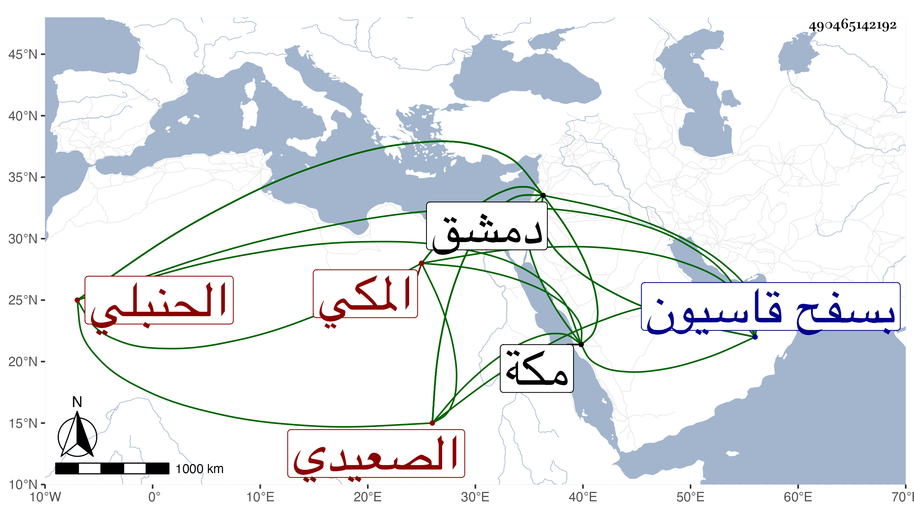

0902Sakhawi.DawLamic.ITO20230111-ara1.EIS1600.490465142192
Biography ID: 490465142192
215
أحمد بن محمد بن أحمد بن إسماعيل الصعيدي ثم المكي الحنبلي نزيل دمشق وسبط الشيخ عبد القوي . ذكره النجم عمر بن فهد في معجمه وغيره وأنه ولد بمكة قبل سنة عشر وثمانمائة ونشأ بها وسافر لدمشق فانقطع بسفح قاسيون ولازم أبا شعرة كثيرا وبه تفقه وانتفع وتزوج هناك وأقام بها وقد سمع في سنة سبع وثلاثين مع ابن فهد بدمشق على ابن الطحان وغيره بل كتب عنه ابن فهد مقطوعا من نظمه . ومات بها في الطاعون سنة إحدى وأربعين ودفن بسفح قاسيون ، وكذا ذكره البقاعي وزاد في نسبه قبل إسماعيل يوسف وبعده عقبة بن محاسن ، وقال سبط عفيف الدين البجائي .
